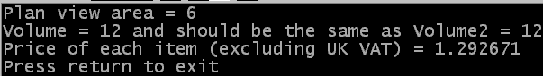

Beide Operatoren können in abgekürzter Form verwendet werden (das Ergebnis der Berechnung kann dann nicht in einem weiteren Ausdruck oder als Parameter eines Befehls verwendet werden und das Element auf der linken Seite des Operators muss eine Variable sein). In der abgekürzten Form wird die Variable auf der linken Seite des Operators multipliziert mit bzw. dividiert durch den Wert auf der rechten Seite und das Ergebnis wird in der Variablen auf der linken Seite des Operators gespeichert. Diese Zeilen zeigen jeweils die Standardform und das dazugehörige Äquivalent in der Kurzform:
a = a * b a * b c = c / d c / dDas nachfolgende Beispiel zeigt einige der Anwendungen von Multiplikations- und Divisions-Operatoren. Sie können den Quellcode auch hier erhalten.
OpenConsole()
width.l = 3
length.l = 2
height.l = 2
area.l = width * length
volume.l = height * area
volume2.l = width * length * height
PrintN("Plan view area = "+Str(area))
PrintN("Volume = "+Str(volume)+" and should be the same as Volume2 = "+Str(volume2))
total_cost.f = 13.67
quantity.l = 9
price_each.f = total_cost / quantity
price_each / 1.175
PrintN("Price of each item (excluding UK VAT) = "+StrF(price_each))
PrintN("Press return to exit")
Input()
CloseConsole()
End
 Dieses Bild zeigt die Ausgabe des obigen Beispielprogramms.
| Vorheriges Thema | Kapitel-Inhalt | Nächstes Thema |
|---|---|---|
| Subtraktion | Benutzerhandbuch Inhalt | Operatoren Vorrang |